1 Introduction and Survey
1.1 Course Objectives
- Interfacing Microsystems
- Mixed-technology systems (System-on-Chip, SoC)
- System analysis
- System specification
- Design Methodology
- Seamlessly modeling and design over all physical domains
- PCB (System) and IC Design
- Architecture
- Partitioning
- Layout
1.2 Scientific Computing
1.3 EDA Tools
- PCB / System Design
- IC / Silicon Design
1.4 OS-Tools
1.5 Code Editors
1.6 Data Science
1.7 Publish Computational Content
1.8 Are you writing or TeXing?
1.9 LaTeX Editors
- IDE’s
- Collaborative Frameworks
1.10 Bibliography and LaTeX
1.11 Design Project
Model-Based Systems Engineering of an Inertial Sensor System (MBSE).
System level, behavioural model
- Matlab/Simulink,
- Python
- HDL (Verilog-ams, VHDL-AMS)
Circuit level, SPICE with behavioural blocks, e.g. OTA and comparator
PCB level
IC level
Final Oral Exam/Project Presentation
1.12 Course Prerequisites
Fundamentals of linux operating systems
Fundamentals of microelectronics
- Device physics and models
- Transistor level analog circuits, elementary gain stages
Fundamentals of analog circuit design
- Operational amplifier
- Active filter design
- Noise analysis
- Switched-capacitor techniques
Prior exposure to SPICE, Matlab, Python or equivalent.
1.13 Brave New World

1.14 From Sand to Silicon (Infineon, Dresden)
1.15 Sand to Silicon (GlobalFoundries, Desden)
1.16 FinFET (Intel)
1.17 TSMC Fab (Next Gen 7/5 nm)
1.18 Once upon a time …

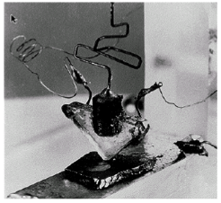
1.19 First IC and today’s chips


1.20 Packaging Densities
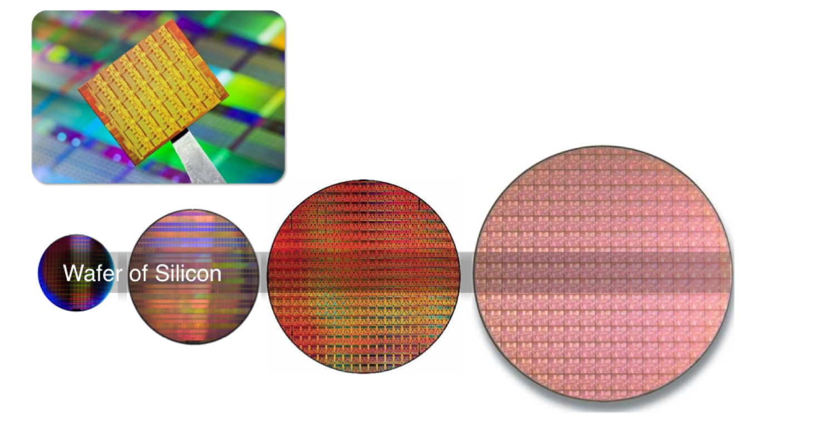
1.21 Moore’s Law
1.22 System Hierarchy

Use hierarchy to describe complex systems
Devide and conquer
1.23 System Assembly

1.24 Interfacing
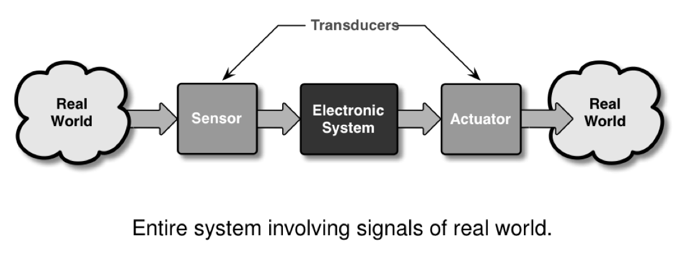
1.25 Meeting a System (1)
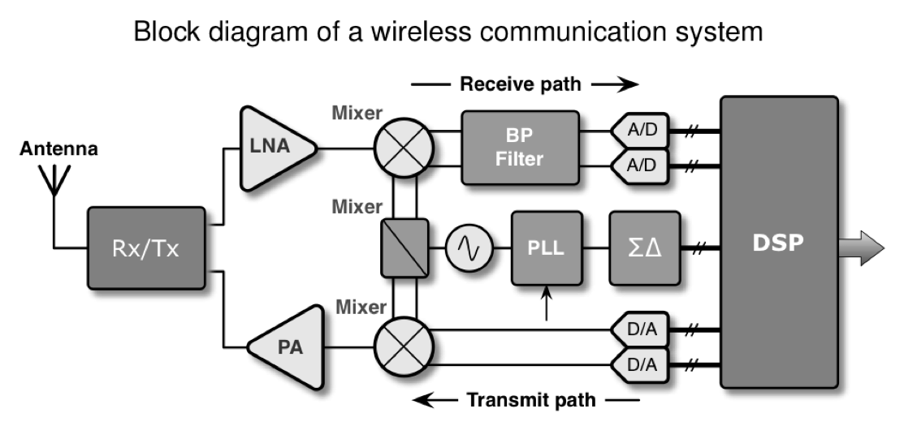
1.26 System in a Package (SiP)

1.27 You will become an expert
Indicators.
Background Knowledge
- System Knowledge, Architecture, Processing, Implementation
Subconscious Knowledge
- Memorized experiences of success stories and dead ends
Special Knowledge
- Dicipline related knowledge, e.g. physics, hardware, software
Teamwork
- Communication abilities, reporting and presentation
Creativity
Tool-Knowlege
1.28 Views on Hardware
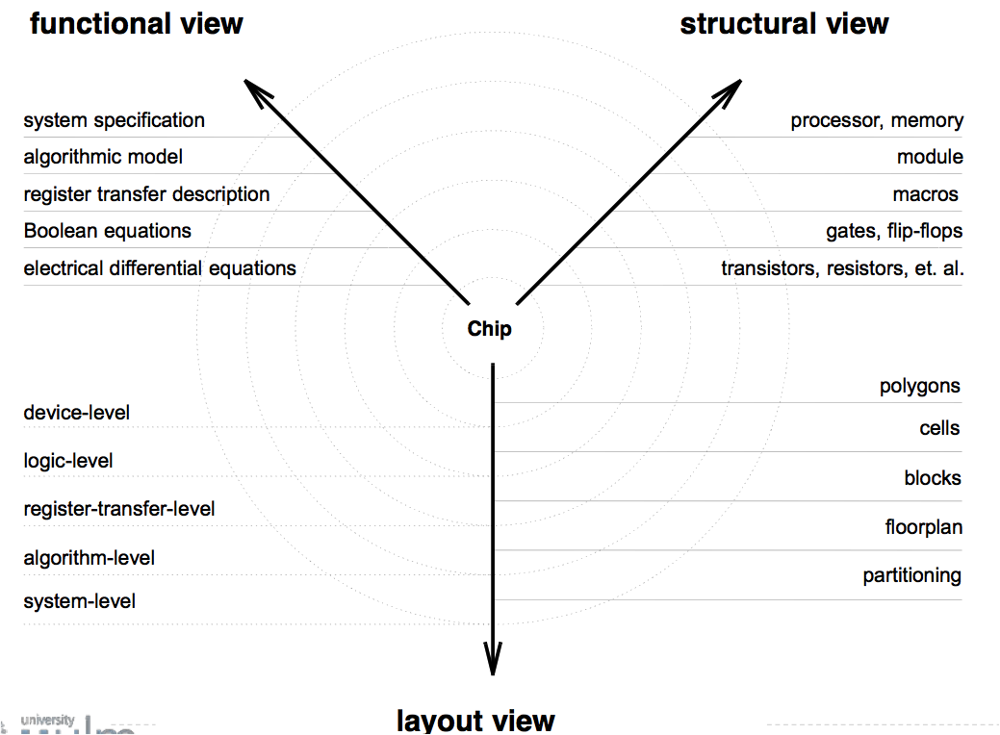
1.29 Abstraction Layer
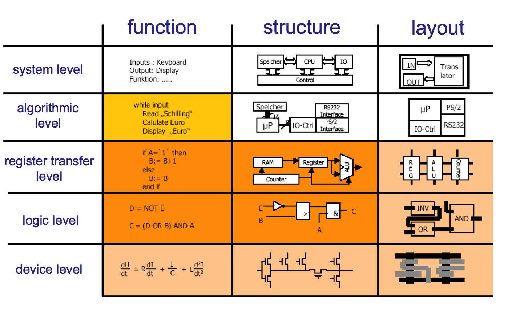
1.30 Design Flow

1.31 Verification

1.32 Frontend vs. Backend (analog)
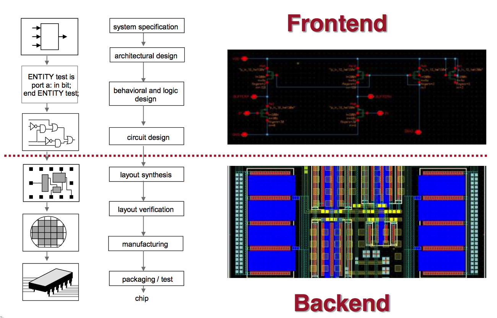
1.33 Frontend vs. Backend (digital)
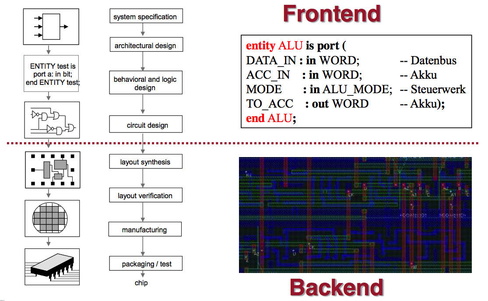
1.34 Analog Design Entry

1.35 Netlist
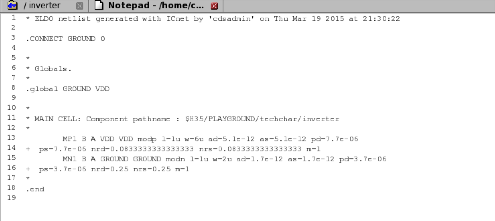
1.36 Layout
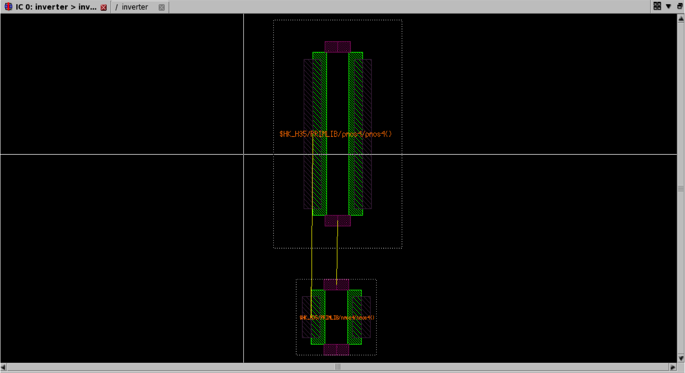
1.37 Digital Design Entry
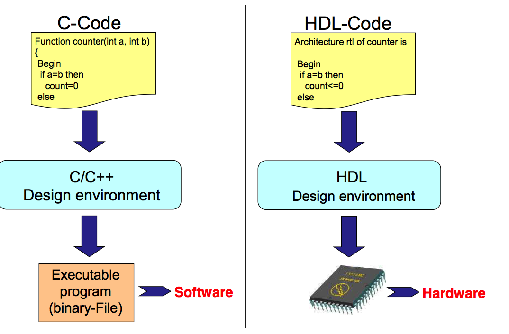
1.38 Hardware Desciption Language

1.39 Technology-Gates and Netlisting

1.40 Standard Cell Layout
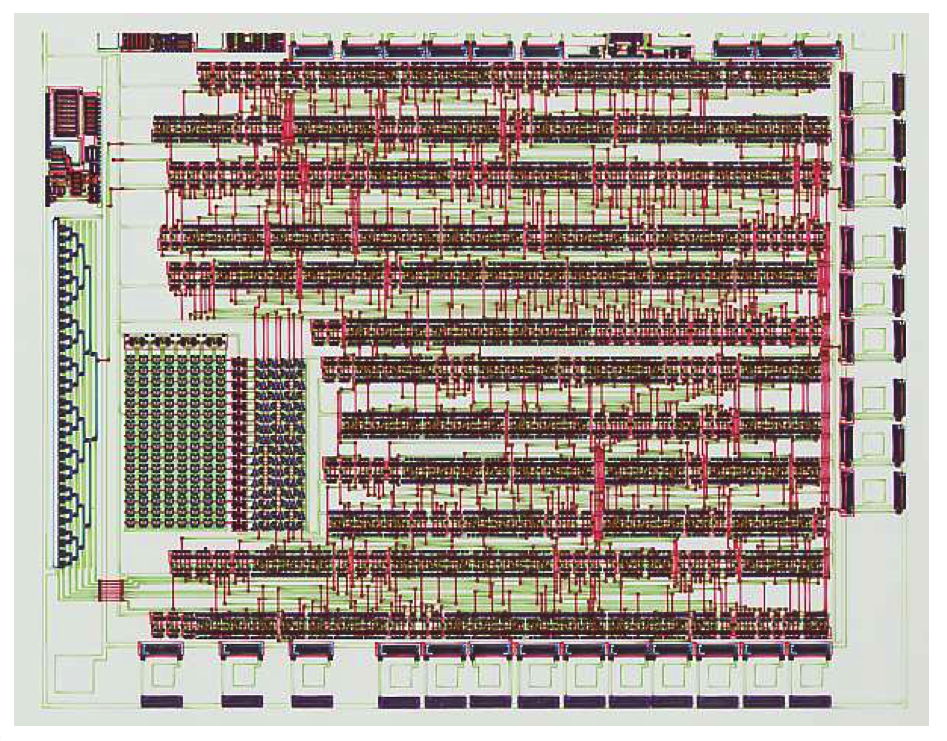